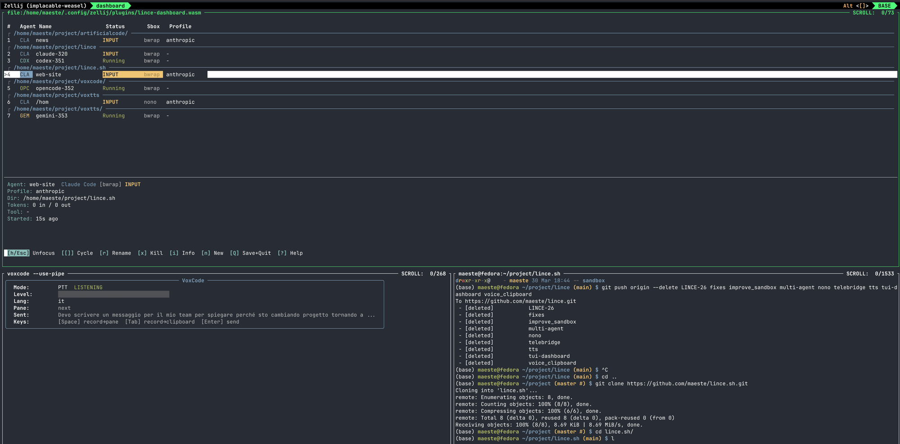
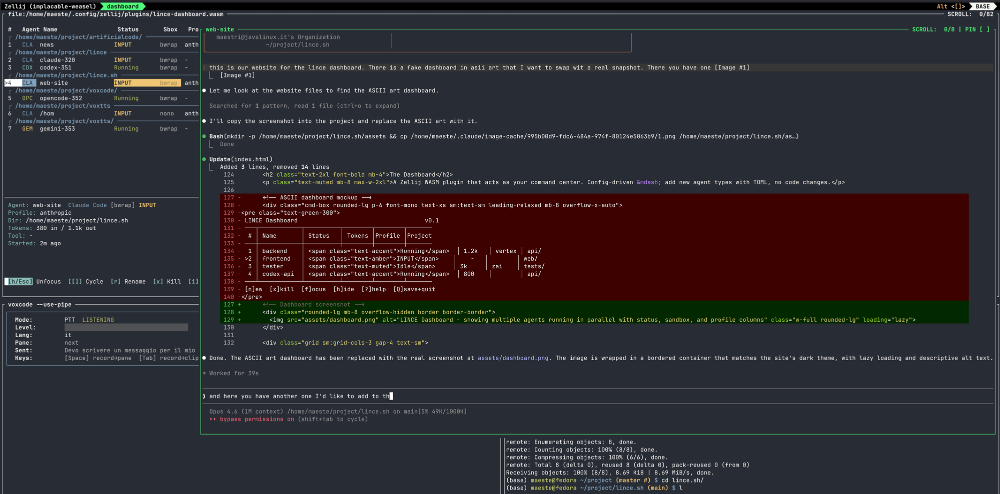

Secure multi-agent workstation
LINCE turns your terminal into a multi-agent engineering workstation. Run Claude, Codex, Gemini, or any coding agent in parallel — each one sandboxed, monitored, and controllable by voice. No vendor lock-in.
curl -sSL https://lince.sh/install | bash
Linux (fully supported) · macOS (experimental) · Windows (planned)
AI coding agents get full terminal access. Without isolation, one bad command can reach your SSH keys, cloud credentials, or git push to production. LINCE lets you sandbox each agent with multiple backends — and choose per-agent at runtime.
Run 8+ agents in parallel across different projects. The TUI dashboard shows real-time status, token usage, and active tools. Spawn, focus, hide, kill agents with single keystrokes.
Speak and your words are transcribed locally via Whisper, then routed to whichever agent has focus. No audio leaves your machine. Works with any agent, not just one vendor.
Your workflow and security should not depend on a single vendor. LINCE supports Claude Code, Codex, Gemini, OpenCode, Aider, Amp — and any custom agent via config. Switch freely.
A Zellij WASM plugin that acts as your command center. Config-driven — add new agent types with TOML, no code changes.


8+ agents in parallel. Claude, Codex, Gemini, OpenCode, or custom.
Save and restore your agent constellation across sessions.
VoxCode transcriptions piped directly to the focused agent.
Choose a sandbox backend per agent at launch — or run unsandboxed when you need full host access.
Agents auto-grouped by project directory when working across repos.
Add agents via TOML. No code changes, no recompilation.
Interactive wizard: detects your OS, installs prerequisites, sets up sandbox + dashboard. Offers optional VoxCode voice input.
Clone, install sandbox + dashboard, launch. See QUICKSTART.md for details.
Fully supported. Tested on Fedora, Ubuntu, Arch.
Experimental. Sandbox via nono (Seatbelt). Looking for testers.
Planned. WSL2 likely works today. Tracking issue.
You speak ───> VoxCode ───> Whisper transcribes locally │ Dashboard <─── routes to focused agent │ agent-sandbox <─── isolates execution ├── bwrap ┐ ├── nono ├── choose per agent └── none ┘ ┌──────┼──────┐ Claude Codex Gemini ...any agent │ │ │ project/ project/ project/
Read the full documentation for CLI reference, configuration options, and security model.
The installer configures which backends are available. Each time you launch an agent, you choose which one to use.
Linux only
Same technology as Flatpak. LINCE's built-in sandbox — minimal by design, zero external dependencies. Battle-tested, zero overhead.
Linux & macOS
Newer alternative. Integration with nono.sh, an external project focused on security including network isolation. Uses Landlock on Linux, Seatbelt on macOS. Brings some additional dependencies.
Any platform
No isolation. The agent runs directly on your system with full host access. Use for trusted tasks where you need unrestricted access to the host environment.
Sandbox + Dashboard + Hooks. The multi-agent orchestration platform.
Voice input for AI agents. Local Whisper transcription, Zellij pipe integration.
Text-to-Speech with local GPU/CPU engines. Kokoro and Piper TTS.
Assess any project's readiness for agentic coding. agentskills.io compliant.